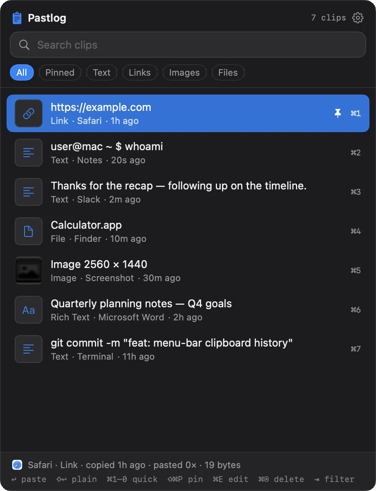
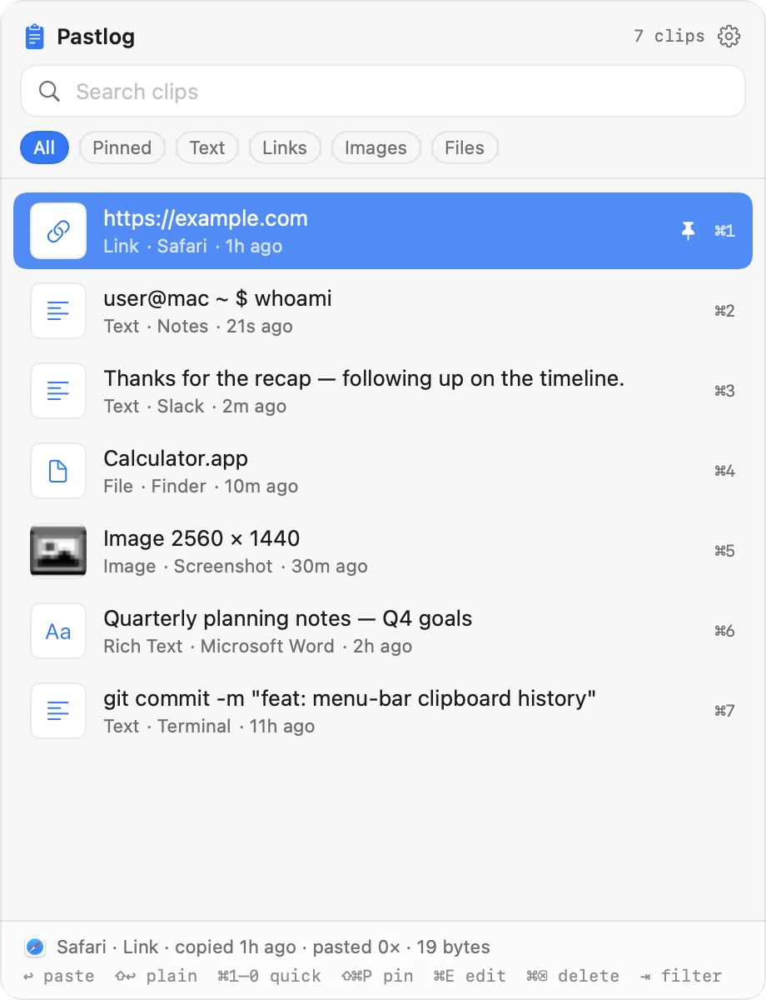
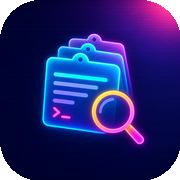

Find anything fast
Search with as many words as you like, and filter by text, links, images, files, or pinned clips.
Free · Open source · Notarized by Apple
Pastlog is a free clipboard manager for Mac. It remembers the text, links, images, and files you copy, so you can find any of them in seconds and paste them again.
⌃⌘V type to search ↩ to paste
Pastlog is a Mac app. Open this page on your Mac to download it.

> how it works
Pastlog lives in your menu bar and quietly keeps everything you copy. There's nothing to set up.
Press ⌘C in any app. Pastlog saves the text, link, image, or file automatically.
Your history opens instantly. Type a few words to find a clip, even one from weeks ago.
Pastlog pastes the clip right where you were working. Hold ⇧ to paste it as plain text.
> features
Stop retyping, re-finding, and re-copying. Everything you need is one shortcut away.
Search with as many words as you like, and filter by text, links, images, files, or pinned clips.
Plain and formatted text, links, screenshots and images, files from Finder, and colors are all saved.
Press ↩ to keep the formatting, or ⇧↩ for clean plain text. You can make plain text the default.
Press ⌘1 through ⌘9, or ⌘0, to paste one of your 10 most recent clips without searching.
Keep addresses, replies, and snippets at the top. Pinned clips are never cleared, no matter how much you copy.
Press ⌃⌥V for a quick menu right at your cursor. Change either shortcut in Preferences.

> themes
Pick from 11 color themes, or let Pastlog match your Mac's light or dark appearance. Try them here:
> privacy
You copy passwords, addresses, and private messages. That's exactly why Pastlog keeps all of it on your computer and nowhere else.
~/Library/Application Support/Pastlog.> faq
Yes. Pastlog is free and open source under the MIT License. There are no ads, accounts, subscriptions, or in-app purchases.
Pastlog is signed with an Apple Developer ID and notarized by Apple, which means Apple has scanned it for malicious software. It opens like any other Mac app, and all of its source code is public on GitHub.
Any Mac running macOS 14 Sonoma or later, with Apple silicon or an Intel processor.
Accessibility access lets Pastlog paste a clip straight into the app you're using. It's optional. Without it, Pastlog copies the clip and you press ⌘V to paste it. To turn it on, open System Settings → Privacy & Security → Accessibility and switch on Pastlog.
No. Pastlog skips anything that password managers mark as concealed or temporary, and you can stop it from saving clips from any app you choose.
Only on your Mac, in ~/Library/Application Support/Pastlog. Pastlog has no account and no networking code, so nothing you copy is uploaded or shared.
You choose: anywhere from 50 to 9,999 clips. Pinned clips are never removed.
Quit Pastlog from its menu bar icon, then drag it from your Applications folder to the Trash. To delete your history too, delete the folder ~/Library/Application Support/Pastlog.

Download Pastlog for free and press ⌃⌘V the next time you need something you copied.